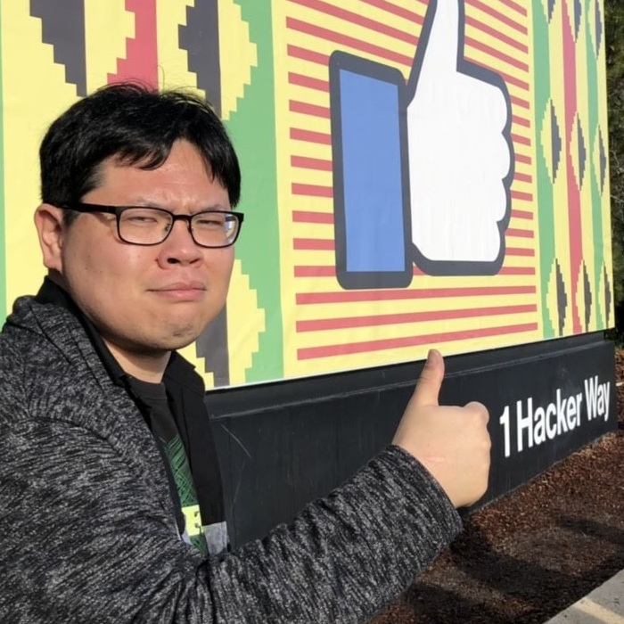
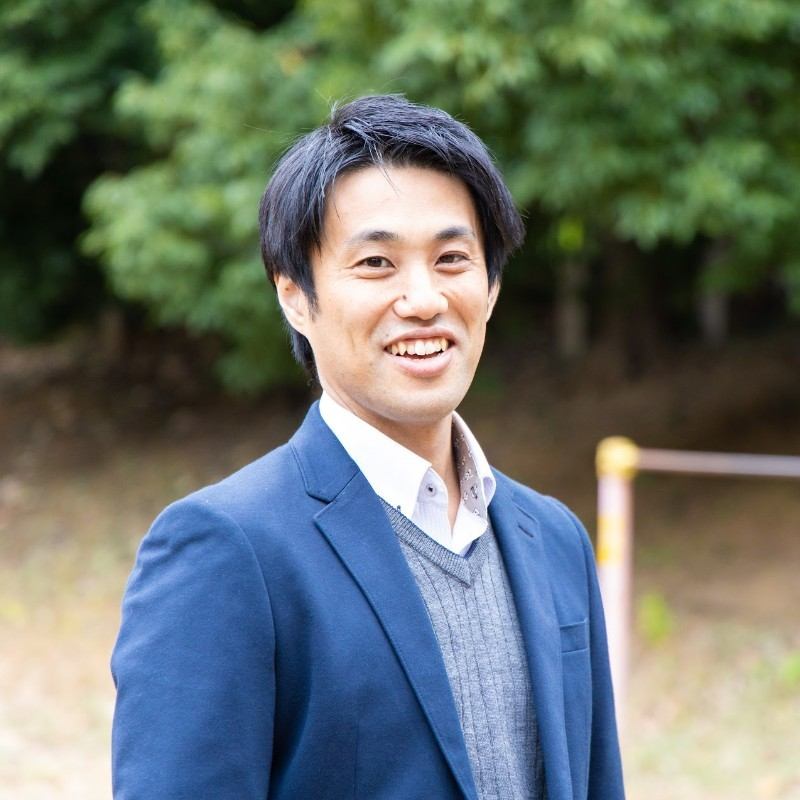
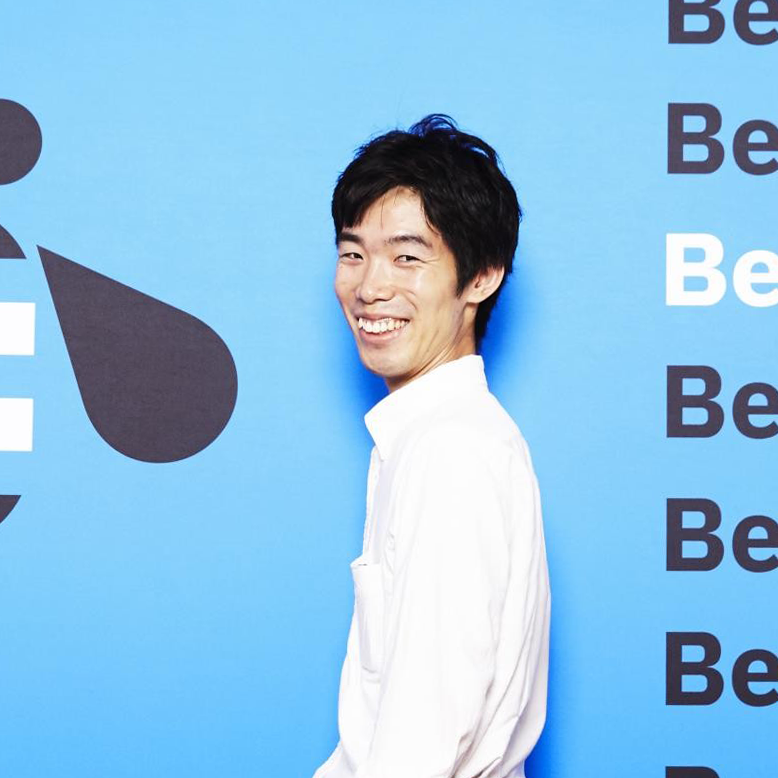
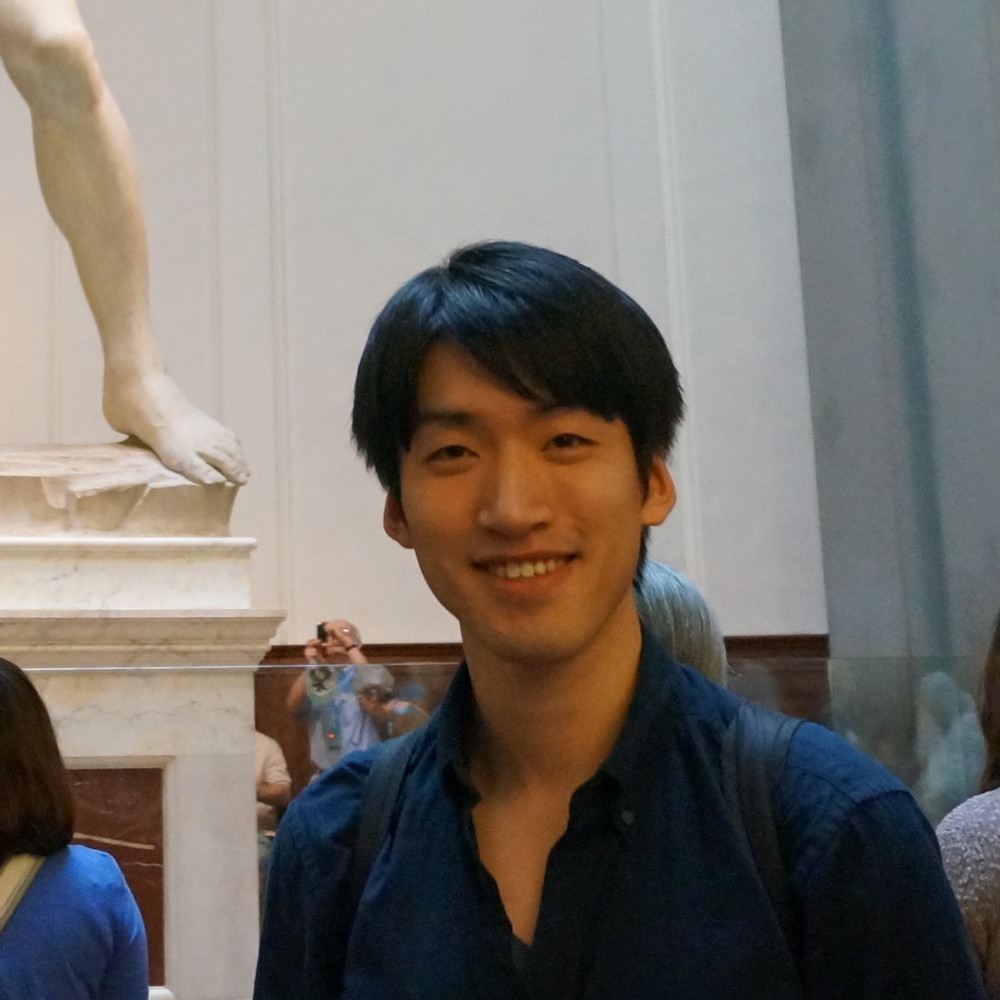
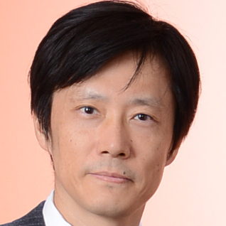
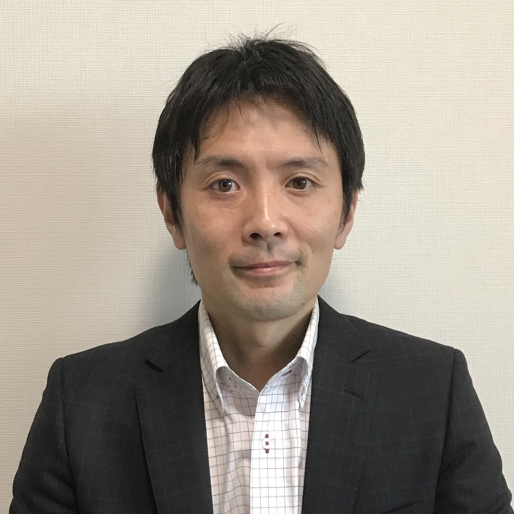
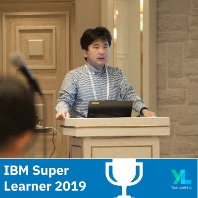
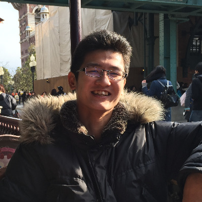

Speakers
黒沢 三智也
三菱電機インフォメーションシステムズ(株)
JIMUC 会長
川居 洋志
日本情報通信株式会社
JIMUC 副会長

増田 和紀
エレメンタムコンサルティングLLC
JIMUC 副会長
辻 哲治
エヌアイシー・ソフト株式会社
JIMUC 先進IT運用管理分科会メンバー

細田 和憲
株式会社ソルパック
JIMUC API＆Watson ナレッジベース分科会リーダー
稲見 千賀子
株式会社ケーピーアール研究所
JIMUC 事務局

西川 浩平
開志専門職大学 情報学部講師

江澤 美保
株式会社クレスコ AIサービスエバンジェリスト

田中 正吾
ワンフットシーバス 代表

柿本 大地
株式会社フジミック埼玉 マネージャ

榎本 陽祐
株式会社ジョーレン テクニカルエキスパート
赤石 雅典
アクセンチュア株式会社 ビジネス コンサルティング本部 AIグループ シニア・プリンシパル

木村 桂
日本アイ・ビー・エム株式会社

青山 政弘
日本アイ・ビー・エム株式会社
伊吹 純（ぴゅあ）

森 智章

頼 伊汝
日本アイ・ビー・エム株式会社

リョウコ

松尾 惇士
日本アイ・ビー・エム株式会社

堤 康広
日本アイ・ビー・エム株式会社

江田 幸弘
日本アイ・ビー・エム株式会社

平岡 大祐
日本アイ・ビー・エム株式会社

小薗井 康志
日本アイ・ビー・エム株式会社
武田 征士
日本アイ・ビー・エム株式会社

沼田 祈史
日本アイ・ビー・エム株式会社
根本 亮
日本アイ・ビー・エム株式会社

土居 遼太郎
日本アイ・ビー・エム株式会社
戸倉 彩
日本アイ・ビー・エム株式会社
吉田 浩司
日本アイ・ビー・エム株式会社
松島 輝昌
日本アイ・ビー・エム株式会社

斉藤 明日香
日本アイ・ビー・エム株式会社

平塚 博章
日本アイ・ビー・エム株式会社